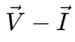
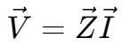
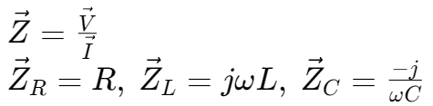
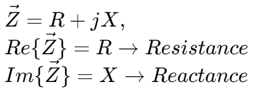
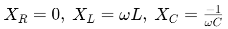
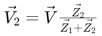
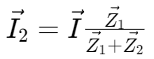
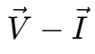

阻抗 | Impedance
对于电阻、电容和电感，其  关系都可以看成这个形式：

其中，对于不同的元件：

电抗 | Reactance
阻抗是相量，有实部和虚部。

其中，对于不同的元件：

由此可得：
- 电抗 = 0 时，电路为纯电阻电路；
- 电抗 < 0 时，电路为容性；
- 电抗 > 0 时，电路为感性。
阻抗的分压和分流
分压：


分流：


对于电阻、电容和电感，其  关系都可以看成这个形式：
其中，对于不同的元件：
阻抗是相量，有实部和虚部。
其中，对于不同的元件：
由此可得：
分压：
分流：